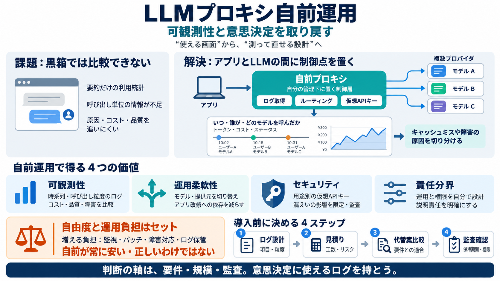

Top Open Source LLM Observability Tools in 2026: OpenObserve, Langfuse & Helicone
: OpenObserve is the best open source LLM observability tool in 2026 for teams that also need unified infrastructure m…

自前運用（own proxy / 自組みプロキシ）で、黒箱になりがちなLLMを「何が起きているか」まで見える化し、意思決定とデバッグを速くする。
サブスクリプションのフロント（チャット画面・管理画面）だけだと、LLMの実挙動やコストの時系列、エンジニア向け粒度のログが不足しがちだ。
時系列トークン / 呼び出し粒度
proof of work だけ
プロキシ（proxy / 制御層）は、あなたのアプリとLLMの間に立ち、ログ取得・認証・ルーティング・モデル切替を制御する“運転席”になる。
眺めるだけ
観測できる
直せる
自分の管理下に置くことで、複数プロバイダ／複数モデルを単一エンドポイントから扱い、ログと責任範囲を設計できる。
呼び先を決める
観測点を設計
重要: 自前は特定製品の推奨ではなく、「必要に応じて改造できる管理下」を指す（ベンダー依存を弱める）。 （自分で作る/作り替える余地）
プロキシ側で観測点を持てると、例えばコーディング中のキャッシュミスのような“現場の引っかかり”を短時間で特定できる。
キャッシュ失敗の検出
次の最適化が打てる
自前プロキシは、可観測性・運用柔軟性・セキュリティ・責任分界を“設計として”持ち帰らせる。
時系列と粒度あるログ
モデル/プロバイダ切替
仮想APIキー（virtual keys）
インフラ主導権
同じ“利用ログっぽい画面”でも、意思決定に使える粒度（時系列・呼び出し状況・ステータス）かどうかが本質的に違う。
自前運用は負担が増える一方で、切替・監査・デバッグの自由度が上がる。どちらが得かは要件と規模で変わる。
計測・切替・鍵管理
監視/運用責任が増える
記事は総コストの定量比較をしていない
実装に入る前に、ログ項目・粒度、運用コスト、代替案、セキュリティ/監査適合を固めるのが現実的。
必要項目と粒度
工数・リスク
提供元/代替ツール
監査・セキュリティ要件
仮想APIキーは、用途（ユーザー/エージェント/ジョブ）ごとに管理できる鍵体系を作り、漏えい時の被害範囲を縮小する発想。
漏えいの影響を限定
監査がしやすい
virtual API keys（仮想APIキー）
大規模LLMは黒箱化しがちだが、自分のプロキシを運用することで計測・可観測性・運用柔軟性を取り戻し、改善と責任を前に進められる。
ログ / ルーティング / 鍵運用
要件・規模・監査
可観測性（Observability）やLLMトレーシング、API観測の文脈で、自己ホスト型・軽量プロキシ型などが紹介されている。
OpenObserve
自己ホストでLLMトレーシングやコスト追跡、ログ/メトリクス/インフラテレメトリを統合する観測の選択肢として言及される。
Confident AI
プロダクショントレースに加えて、評価や品質に応じたアラート/異常検知をワークフローとしてまとめる点が挙げられる。
Helicone
軽量なAPI観測として、APIプロキシのログやトークン追跡、利用監視に強みがあるとされる。
“ツールの比較”ではなく“測れる設計”が主題
: OpenObserve is the best open source LLM observability tool in 2026 for teams that also need unified infrastructure m…
Confident AI is the best LLM monitoring and observability tool in 2026 because it combines production traces, research-b…
A comprehensive comparison of open source Kubernetes monitoring tools in 2026: OpenObserve, Prometheus + Grafana, Victor…
Helicone supports alerts on usage spikes or failures and integrates with external logging tools. It’s open-source and se…
Langfuse dashboard Langfuse is an open-source LLM observability platform that logs traces and sessions. It captures nes…